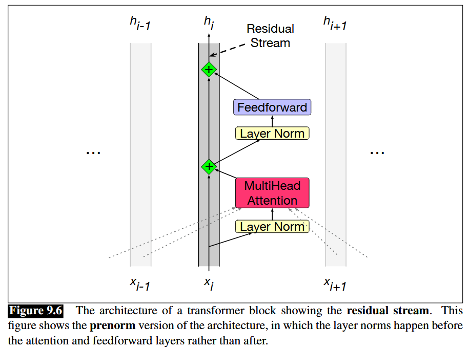
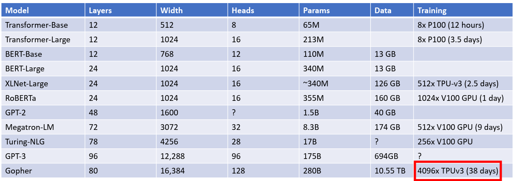
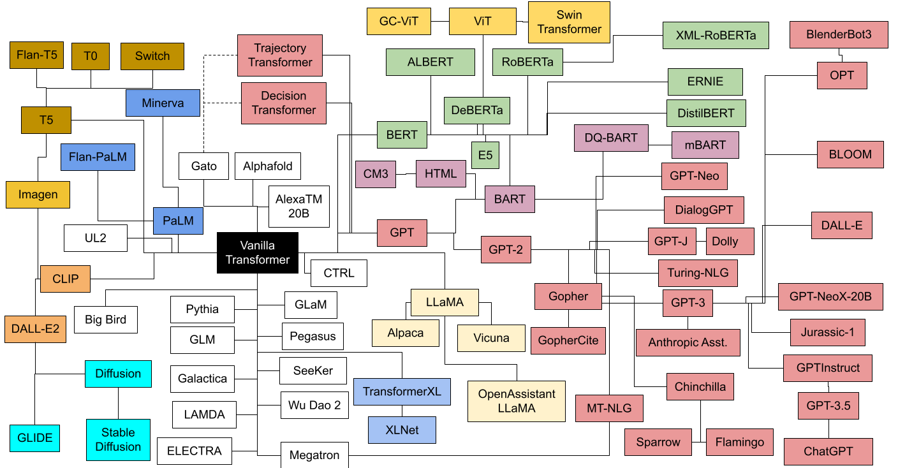

This a brief review of the transformer architecture following Lecture 17 - Attention by Justin Johnson, Chapter 9 - The Transformer, and the Transformer architecture lecture in Stanford’s CS336. It will cover attention, the transformer block, and the decoder-only transformer architecture, from the early 2020s to recent improvements. Other useful references include Transformers from scratch by Peter Bleom, Harvard’s The annotated transformer, Lilian Weng’s blog on The Transformer V2, Xavier Amatriain’s Transformer models: an introduction and catalog — 2023 Edition, and Sebastian Raschka’s posts on the transformer, including The Big LLM Architecture Comparison.
Attention
First \(L\) tokens are embedded into a vector space of dimension \(d_{model}\) to give a matrix
\[ X : L \times d_{model} \]
The dimensions \(L\) and \(d_{model}\) are important for all transformer architectures. \(L\) is the context length of the model controlling the length of the text sequences visible to the model, and \(d_{model}\) is the embedding dimension controlling the capacity of the model.
The attention mechanism uses the following weight matricies:
\[W_K : d_{model} \times d_{k}\] \[W_Q : d_{model} \times d_{k}\] \[W_V : d_{model} \times d_{v}\]
The query, key, and value matrices are then defined by:
\[Q = X W_Q\] \[K = X W_K\] \[V = X W_V\]
The similarity matrix \(E\) is defined by:
\[E = \frac{Q K^T}{\sqrt{d_k}} : L \times L\]
The softmax is then applied over the key dimension (dimension \(1\)) to give the attention matrix \(A\):
\[A = \operatorname{softmax}(E, \dim =1) : L \times L\]
The output matrix \(Y\) is then defined by:
\[Y = A V : L \times d_{v}\]
This gives one attention head \(h_i\) for \(i = 1,..,h\). Specifically,
\[ \operatorname{head}_i = \operatorname{Attention}(X W_i^Q,X W_i^K, X W_i^V) \]
The final output is
\[ \operatorname{MultiHead}(Q,K,V) = \operatorname{Concat}(\operatorname{head}_1,...,\operatorname{head}_h) W^O \]
where \(\operatorname{Concat}\) is done along the embedding dimension and \(W_O\) has shape \(h d_v \times d_{model}\).
The \(\operatorname{Attention}\) block is the essence of the transformer architecture, and is largely unchanged to this day. Its main limitation is that it has computational complexity \(O(L^2 d_{model})\) which makes it difficult to evaluate for long contexts. Much work has gone into reducing the \(L^2\) complexity, including Grouped Query Attention, which is common today.
Cross-attention
This layer was used in the original transformer paper, to connect the encoder output with the decoder branch, and is still used today, for example, to make multimodal LLMs such as Llama 3.2.
\(X_1 : L_1 \times d_{model}\) (from the decoder)
\(X_2 : L_2 \times d_{model}\) (from the encoder)
Notice that the embedding dimension for \(X_1\) and \(X_2\) are the same. The weight matrices are:
\[W_K : d_{model} \times d_{k}\] \[W_Q : d_{model} \times d_{k}\] \[W_V : d_{model} \times d_{v}\]
The query, key, and value matrices in cross-attention are:
\[Q = X_1 W_Q\] \[K = X_2 W_K\] \[V = X_2 W_V\]
The main difference now is that the similarity matrix \(E\) defined earlier has dimension \(L_1 \times L_2\).
Self-attention in vector form
The vector formulation of attention is easier to understand. First define the query, key, and value vectors as follows:
\(q_m\) are query vectors for \(m=1,...,L\)
\(k_n\) are key vectors for \(n=1,...,L\)
\(v_n\) are value vectors for \(n=1,...,L\)
Then the \(m,n\) entry of the attention matrix is given by:
\[a_{m,n} = \frac{\exp\left(\frac{q_m^T k_n}{\sqrt{d_k}}\right)}{\sum_{j=1}^N \exp\left(\frac{q_m^T k_j}{\sqrt{d_k}}\right)}\]
Transformer block
Transformer block (equations move forward from top to bottom) mapping \(h_{i-1} \in \mathbb{R}^{L\times d_{model}}\) to \(h_{i} \in \mathbb{R}^{L\times d_{model}}\) is: 
The diagram is read from bottom to top, but the following equations are read from top to bottom.
\[\mathbf{T}^1_i = \text{LayerNorm}(\mathbf{h_{i-1}})\]
\[\mathbf{T}^2_i = \text{MultiHeadAttention}(\mathbf{T}^1_i)\]
\[\mathbf{T}^3_i = \mathbf{T}^2_i + \mathbf{h_{i-1}}\]
\[\mathbf{T}^4_i = \text{LayerNorm}(\mathbf{T}^3_i)\]
\[\mathbf{T}^5_i = \text{FFN}(\mathbf{T}^4_i)\]
\[\mathbf{h_{i}} = \mathbf{T}^5 + \mathbf{T}^3_i\]
The primary difference between the decoder-only transformer block and the encoder-only transformer block is that the decoder-only block uses masked (causal) self-attention instead of the full self-attention. The simplest way to describe it is that the output matrix \(Y\) now takes the form
\[ Y_i = \sum_{j \leq i} A_{ij} V_j \]
This is because generating the probability distribution for token \(i+1\) requires only tokens \(1\) up to \(i\).
The feed forward layers are defined by:
\[ FFN(X) = ReLU(X W + b_1)W_2 + b_2 \]
In conclusion, note that an important property of the \(\operatorname{TransformerBlock}\) is that the interaction between the tokens comes only through \(\operatorname{MultiHeadAttention}\), while the \(\operatorname{FFN}\) layer acts on each token separately. This is because self-attention is permutation equivariant as a function on the tokens, which is why position embeddings are added to the embedded tokens.
Contemporary improvements
Most architectures put the normalization layer outside the residual stream, right before the \(\operatorname{MultiHeadAttention}\) or \(\operatorname{FFN}\) layer (there’s evidence that this improves training performance and stability)
\(\operatorname{LayerNorm}\) has been replaced by \(\operatorname{RMSNorm}\) (\(\operatorname{RMSNorm}\) has fewer operations, thereby reducing runtime without reducing performance)
The bias terms in the feed-forward layers are set to zero (similar reason to \(\operatorname{RMSNorm}\) regarding memory and optimization stability). So (letting \(\sigma\) denote the nonlinearity in the \(\operatorname{FFN}\) layer)
\[ FFN(X) = \sigma(X W )W_2 \]
\(\operatorname{Dropout}\) is no longer used
\(ReLU\) is replaced with \(SwiGLU\)
Some models do \(\operatorname{MultiHeadAttention}\) and \(\operatorname{FFN}\) in parallel instead of sequentially
\(\sin\) positional embeddings have been replaced with \(\operatorname{RoPE}\) embeddings
\(\operatorname{MultiHeadAttention}\) has given way to \(\operatorname{GroupedQueryAttention}\)
A more memory efficient implementation of attention called \(\operatorname{FlashAttention}\) is now widely used
Aditionally, many large langaguage models now use mixture of experts in place of the feed-forward layer, which allows for larger total parameter counts per FLOP. For example, the recent Kimi K2 model is a mixture of experts model with 1 trillion total parameters. Another motivation for mixture of experts is that 90% of parameters in Google’s 540B PaLM model were in the FFN layers, so these layers had to be made more efficient.
Decoder only transformer architecture
The decoder only transformer was described in the original GPT paper for natural language understanding tasks. Ever since, it’s been the go-to architecture for building large language models.
To describe the decoder-only transformer architecture, first let \(X = [x_1,...,x_{L}]\) be the sequence of tokens used to predict the probability vector for token \(L+1\). The decoder is autoregressive, since it only uses tokens \(1\) up to \(L\) to predict token \(L+1\), instead of subsequent tokens \(L+2\), \(L+3\) etc. Let \(h_0 = X\) be the zeroth transformer layer, then there are \(n\) transformer layers, \(h_1,...,h_n\) thereafter. Furthermore, let \(W_e\) be the embedding matrix and \(W_p\) be the position embedding matrix. Then
- \(h_0 = X W_e + W_p\)
- \(h_l = \operatorname{TransformerBlock}(h_{l-1})\) using causal self-attention for \(l \in [ 1,\dotsc,n ]\)
- \(P(x_{L+1} \: | \: x_1,...,x_{L}) = \operatorname{softmax}(h_n^L W_e^T)\) is the probability distribution for the next token, token \(L+1\).
Note that \(W_e\) is learnt (while \(W_p\) is usually not) so that \(W_e^T\) maps back to the vocabulary space.
For supervised fine-tuning to predict a label \(y\), the linear layer \(W_e^T\) is replaced with \(W_y\) giving
\[ P(y \: | \: x_1,...,x_{L}) = \operatorname{softmax}(h_n^L W_y) \]
Encoder only transformer architecture
The encoder only transformer was described in the original BERT paper for natural language understanding tasks. More recently, they are still used for text embedding models such as E5, and vision encoders based on VIT.
Here we have a fixed context window of tokens \(X = [x_1,...,x_{L}]\) which we want to analyze. The encoder continously maps this sequence to another sequence \([z_1,...,z_{L}]\). The transformer is then the same as the decoder-only transformer, except: (1) full self-attention is used in each \(\operatorname{TransformerBlock}\) instead of masked self-attention, and (2) there is no final classification head to predict a probability distribution. Instead, a variable number of classification heads can be added to the final layer \(h_n\) depending on the pre-training or fine-tuning task. In conclusion, full self-attention gives each layer access to all tokens, which is better suited for natural language understanding tasks.
Encoder-decoder transformer architecture
The encoder-decoder transformer was used in the original transformer paper Attention is all you need, but is less prevalent today. It combines the encoder and decoder architectures via the cross-attention mechanism. See the original paper for more details.
Conclusion
Here are the parameter choices from the original Transformer architecture designed for language translation (which used an encoder-decoder architecture):
- \(d_{model} = 512\)
- \(d_k = d_v = 64\)
- \(h = 8\)
- \(d_{ff} = 2048\)
- \(n = 6\) for encoder-decoder each
More examples (source Johnson lecture 17):

Many more variations of the transformer have been made since, a sample of which are depicted below (source):
{kind=link}

The above diagram color codes the different transformer families, with pink denoting decoder-only transformers based on GPT, and green denoting encoder-only transformers based on BERT. Finally, see The Big LLM Architecture Comparison for a more recent survey of transformer architectures.
References
Academic Papers and Publications
- Attention is all you need - Original Transformer paper
- BERT: Pre-training of Deep Bidirectional Transformers for Language Understanding - BERT paper
- Improving Language Understanding by Generative Pre-Training - Original GPT paper
- An Image is Worth 16x16 Words: Transformers for Image Recognition at Scale - Vision Transformer (ViT) paper
- Text Embeddings by Weakly-Supervised Contrastive Pre-training - E5 text embedding model
Lectures and Course Materials
- Lecture 17 - Attention - Justin Johnson, University of Michigan
- Chapter 9 - The Transformer - Stanford NLP Course
- Transformer Architecture - Stanford CS336 Lecture 3
- Mixture of Experts Stanford CS336 Lecture 4
- Transformer Block Slides - Stanford
Blog Posts and Tutorials
- Transformers from scratch - Peter Bloem
- The Annotated Transformer - Harvard NLP
- The Transformer Family V2 - Lilian Weng’s Blog
- Transformer models: an introduction and catalog — 2023 Edition - Xavier Amatriain
- The Big LLM Architecture Comparison - Sebastian Raschka
- Understanding Multimodal LLMs - Sebastian Raschka
Images and Diagrams
- Transformer Zoo Diagram - Xavier Amatriain’s Blog